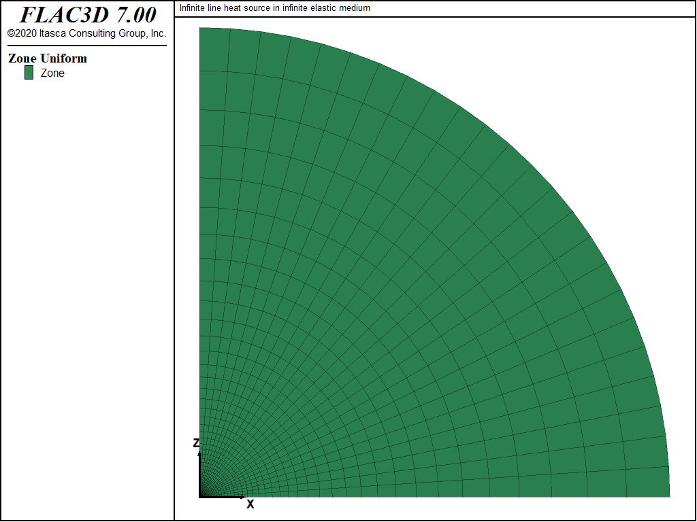
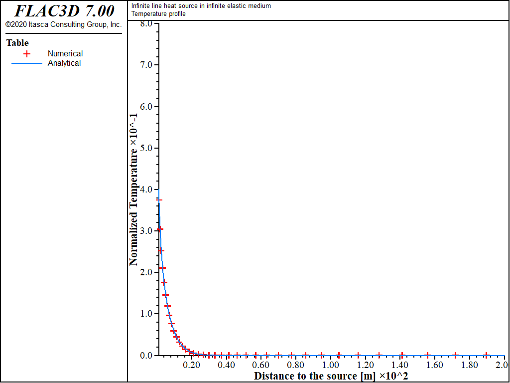
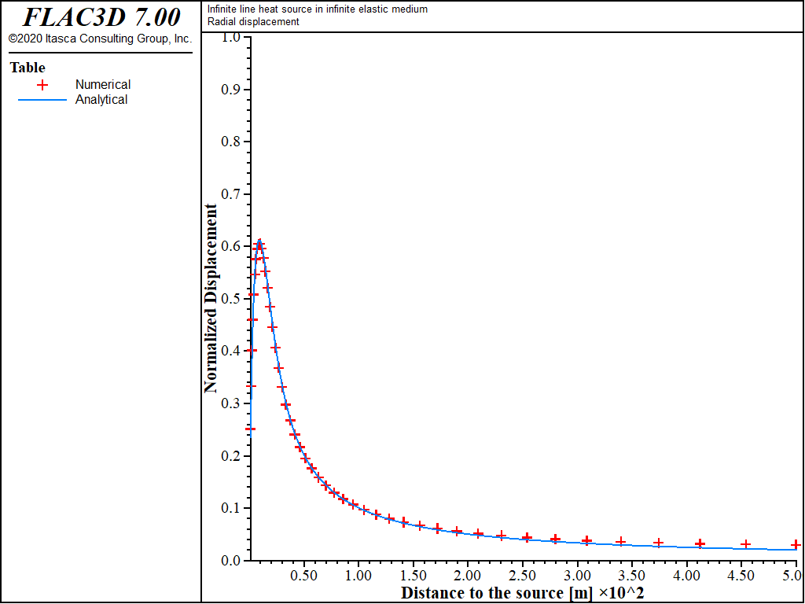
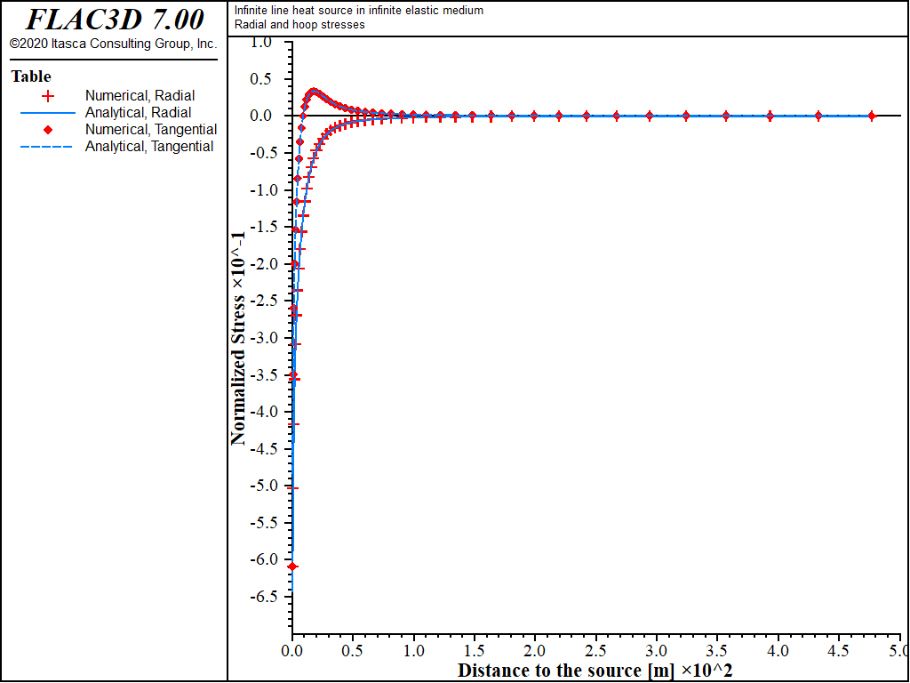

无限介质中的无限线热源
注意
要在 FLAC3D 中查看此工程，请使用菜单命令 。选择“Thermal/InfinityLineSource”，再选择“InfinityLineSource.f3dprj”即可加载。该工程的主数据文件（main data files）在本示例末尾给出。
一个具有恒定发热速率的无限线热源位于具有恒定热性质的无限弹性介质中。Nowacki（1962）给出了该问题温度、径向和切向应力以及径向位移瞬态值的解：
| 其中： | \(\xi\) | = \({r^2}\over{4 \kappa t}\); |
| \(r\) | = 至线热源的径向距离； | |
| \(\kappa\) | = \({k \over {\rho C_p}}\); | |
| \(a\) | = \({q \over {k}}\); | |
| \(b\) | = \(\alpha_t \ a {9 K \over {3K + 4G}}\); | |
| \(L\) | = 单位长度； | |
| \(q\) | = 单位长度上的均匀能量；以及 | |
| \(E_1(\xi)\) | = \(\int_{\xi}^\infty {e^{-u} \over {u}} du\) 为指数积分。 |
本示例的材料性质以及初始条件和边界条件定义如下：
| 材料性质 | |
| 密度（\(\rho\)） | 2000 kg/m3 |
| 比热（\(C_p\)） | 1000 J/kg °C |
| 导热系数（\(k\)） | 4 W/m °C |
| 线性热膨胀系数（\(\alpha_t\)） | 5 × 10-6/ °C |
| 剪切模量（\(G\)） | 30 GPa |
| 体积模量（\(K\)） | 50 GPa |
| 初始/边界条件 | |
| 初始均匀温度 | 0°C |
| 初始应力状态 | 无应力 |
| 线热源 | |
| 单位长度能量释放（\(q\)） | 1600 W/m |
假定材料属性与温度无关，热源的热输出恒定（不衰减），且线热源为无限长。
本问题的 FLAC3D 网格为圆柱圆盘的 1/4 剖面。线热源的轴线与模型的 \(y\) 轴重合。网格在 \(xz\) 平面内沿径向渐变；在 \(y\) 方向仅使用一层网格单元。模型见图 1（Figure 1）。


图 1：无限线热源的 FLAC3D 网格。
在 FLAC3D 中，线热源由两个点源表示。调整点源强度 \(q_p\)，使其向模型中释放的能量等同于线强度为 \(q\) 的线热源。对于 1/4 对称模型以及位于模型厚度 \(t\) 上的两个点源，\(q_p\) 与 \(q\) 之间的关系为
恒定点热源施加在沿 \(y\) 轴的网格点上；模型边界保持绝热，以代表热对称面。网格延伸至距 \(y\) 轴 500 m 处；选取该距离足够大，以使边界效应在模拟目标龄期 1 年内不影响解。远边界在力学上固定；沿 \(x\) 轴和 \(z\) 轴的边界固定，以代表无剪切的对称面。
由于材料为弹性，建议采用非耦合分析。首先采用隐式求解算法将问题热学求解至 1 年（模型力学活动命令（model mechanical active） 关闭（off） 和 模型热活动命令（model thermal active） 开启（on）），然后计算至力学平衡（模型力学活动命令（model mechanical active） 开启（on） 和 模型热活动命令（model thermal active） 关闭（off））。对于力学阶段，采用组合阻尼（单元力学阻尼（zone mechanical damping） 组合（combined））。本问题中热源在一个方向上产生均匀运动。组合阻尼比局部阻尼更适合这种情形（见力学阻尼（Mechanical Damping））。
上述方程（above）中解析解的无量纲形式通过 FISH 函数编写。随后可在表格中直接比较解析值和数值。温度和径向位移的解析解编写在 FISH 函数 解析解温度（ana _soltu） 中，径向和切向应力的解析解编写在 解析解应力（ana _solst） 中。解析解中使用的指数积分函数编写为另一个名为 膨胀界面（exp-int） 的 FISH 函数。温度和位移数值结果的无量纲值在 FISH 函数 数值解温度（num _soltu） 中计算，径向和切向应力的无量纲值在 数值解应力（num _solst） 中计算。无量纲温度、径向应力、切向应力和径向位移的数值分别存储在表 1、3、5 和 7 中。无量纲温度、径向应力、切向应力和径向位移的解析值分别存储在表 2、4、6 和 8 中。
1 年时温度、径向位移以及径向和切向应力分布的结果以表格图形式示于图 2（Figure 2） 至图 4（Figure 4）。温度数值解与解析解之差小于 2%。位移和应力的比较也很好；在距热源 100 m 范围内，差值一般小于 2%。固定外边界对远离热源处的数值结果有影响，但吻合仍然合理。


图 2：1 年时的温度分布。


图 3：1 年时的径向位移分布。


图 4：1 年时的径向和切向应力分布。
参考文献
Nowacki, W. Thermoelasticity. New York: Addison-Wesley (1962).
数据文件
; 空心圆柱的加热
; 耦合与非耦合热–力计算
model new
model large-strain off
fish automatic-create off
model title ...
'Heating of a hollow cylinder - thermal ... mechanical calculations'
model configure thermal
; --- 主计算 ---
zone create cylindrical-shell point 1 (2,0,0) point 2 (0,0.1,0) ...
point 3 (0,0,2) dimension (1,1,1,1) size 10 1 12
zone face skin
; --- 力学模型
zone cmodel assign elastic
zone property bulk 48e9 sh 28e9
zone face apply velocity-z 0 range group 'Bottom'
zone face apply velocity-x 0 range group 'West1'
zone face apply velocity-y 0 range group 'North' or 'South'
; --- 热学模型
zone thermal cmodel isotropic
zone thermal property conductivity 4.2 expansion 5.4e-6 specific-heat 880
zone initialize density 2000
zone face apply temperature 100 range group 'West2'
zone face apply temperature 0 range group 'East'
model save 'cyl-init'
; 非耦合分析
model mechanical active off
model thermal active on
model solve
model mechanical active on
model thermal active off
model solve
model thermal active on
model save 'cyl-ucpl'
; 耦合分析
model restore 'cyl-init'
model mechanical active on
model thermal active on
model mechanical substep 10000
model mechanical slave on
model solve ratio 1e-3
model save 'cyl-cpl'
program return
| 这些内容对您有帮助吗？… 版权与免责声明 |
FLAC3D © 2019, Itasca | 原文更新于 2020 年 10 月 8 日 |